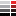
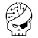

Grégory PAUL’s portfolio
Projects
- GitHub.com/ValtechTechno
- GitHub.com/Mappy
- GitHub.com/paulgreg
- CalDAV-SMS-Notifier : a SMS notification tool for next events in CalDAV calendars,
- Roomba Pilot : piloting a Roomba using an Arduino,
- Arduino MP3 player : a mp3/ogg player based on an Arduino Micro,
- Adafruit_VS1053_Library : contribution to Adafruit VS1053 Codec Breakout library,
- Arduino-dice : an electronic dice based on an Arduino Uno,
- UniquePasswordBuilder : a per site strong password generator using scrypt,
- webcomponent-mappy : a Mappy Web Component,
- webcomponents-slides : slides on Web Components,
- bitcoin-cryptocurrencies : slides on Bitcoin and other cryptocurrencies,
- rsstodolist-server : a port of rsstodolist.appspot.com in django,
- rsstodolist-firefox : rsstodolist Firefox Add-on,
- rsstodolist-legacy : the source code behind rsstodolist.appspot.com app,
- Thermomix recipes (demo),
- Simple Monitoring : a simple node monitoring tool,
- build-status : a build status app & its Hudson/TeamCity notifier,
- CasperJS Ghost Tour : CasperJS slides,
- Présentation CouchDB : CouchDB slides,
- Présentation HTML5 : HTML5/css3 slides.
- SourceForge
Tools
Présentations en français
- 2014 : Web Components,
- 2014 : Bitcoin et monnaies cryptographiques (video),
- 2013 : Les Tests : Pourquoi, Comment ? (video),
- 2013 : CasperJS (forké depuis le dépôt d’Aurélien Thieriot),
- 2012 :
 HTTP,
HTTP,
- 2011 :
 nodejs,
nodejs,
- 2011 : Le Web a-t-il besoin de HTML5 ? aux ValtechDays,
- 2011 : AppEngine,
- 2010 : CouchDB (verstion courte),
- 2010 : HTML5,
- 2010 : Jetpack (obsolète),
- 2009 : JavaScript.
Podcasts
-
TDD,
iOS,
Cloud Computing,
Agile UX,
HTML5, CSS3 & API JavaScript,
Azure,
Kanban,
DevOps.
- Épisode sur Yeoman, Grunt et Bower sur une tasse de thé podcast,
- Contributions techniques à aviapod.fr.
Blog
About me
- @em (you can download my PGP public key from MIT server or from here),
- @paulgreg,
 hackaday.io,
hackaday.io,  linkedIn,
linkedIn,
- StackOverflow, ServerFault, SuperUser, RootMe, DeathStar,
 Conferences I will attend :
Fosdem 2015 ?
Conferences I will attend :
Fosdem 2015 ?
 Conferences I attended in
2014 :
Fosdem,
Devoxx Paris (speaker),
Nuit du hack ;
2013 :
dotJS,
Nuit du hack,
Devoxx Paris (speaker),
Fosdem;
2012 :
Devoxx Paris,
Nuit du hack,
dotJS ;
in 2011 :
ValtechDays (speaker),
Nuit du hack,
JsConf.eu ;
in 2010 :
Nuit du hack,
JsConf.eu ;
in 2009 :
Agile France ;
in 2008 :
XP Days,
ValtechDays,
Université du SI ;
in 2006 :
EclipseCon.
Conferences I attended in
2014 :
Fosdem,
Devoxx Paris (speaker),
Nuit du hack ;
2013 :
dotJS,
Nuit du hack,
Devoxx Paris (speaker),
Fosdem;
2012 :
Devoxx Paris,
Nuit du hack,
dotJS ;
in 2011 :
ValtechDays (speaker),
Nuit du hack,
JsConf.eu ;
in 2010 :
Nuit du hack,
JsConf.eu ;
in 2009 :
Agile France ;
in 2008 :
XP Days,
ValtechDays,
Université du SI ;
in 2006 :
EclipseCon.